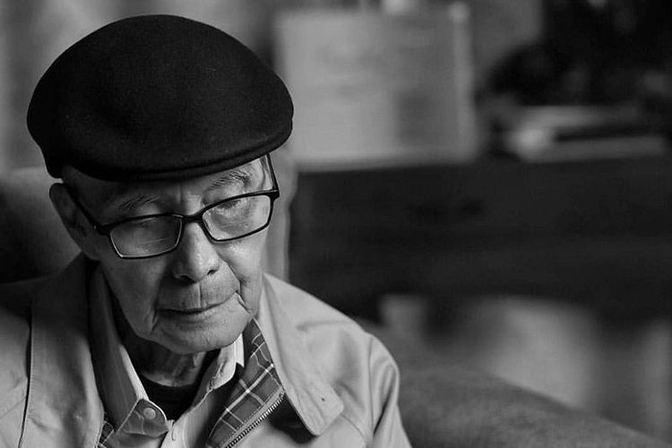

TUJUAN
Tujuan gue ngebuat website Galeri Syair ini adalah untuk menampilkan karya-karya puisi yang telah gue buat dan juga sebagai wadah untuk berbagi inspirasi kepada orang lain.
Melalui website ini, gue berharap bisa menginspirasi orang lain untuk menulis puisi dan mengekspresikan perasaan mereka melalui kata-kata.
Selain itu, gue juga ingin memperkenalkan puisi sebagai bentuk seni yang indah dan bermakna kepada lebih banyak orang.
Bagi gue, puisi adalah cara untuk menyampaikan emosi dan pengalaman hidup dengan cara yang unik dan kreatif.
Jadi, dengan adanya website Galeri Puisi ini, gue berharap bisa memberikan kontribusi positif bagi dunia seni dan budaya, serta menginspirasi orang lain untuk mengeksplorasi kreativitas mereka melalui puisi.
Karena pada akhirnya, seni adalah tentang berbagi dan menginspirasi satu sama lain.
Dan gue pengen jelasin kalo Sastra adalah seni yang paling indah, karena melalui kata-kata, kita bisa merasakan emosi yang mendalam dan menemukan makna dalam kehidupan.
Sastra itu ga alay atau norak, tapi justru sebaliknya, sastra adalah bentuk seni yang paling elegan dan bermakna.
Sastra adalah cerminan dari kehidupan manusia, dan melalui puisi, kita bisa menemukan keindahan dalam setiap momen kehidupan.
Sastra adalah jendela untuk melihat dunia dan memahami diri kita sendiri.

"Puisi bukan bukan sekedar kata, tetapi napas jiwa yang menari diantara makna."
- Sapardi Djoko Damono